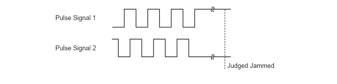
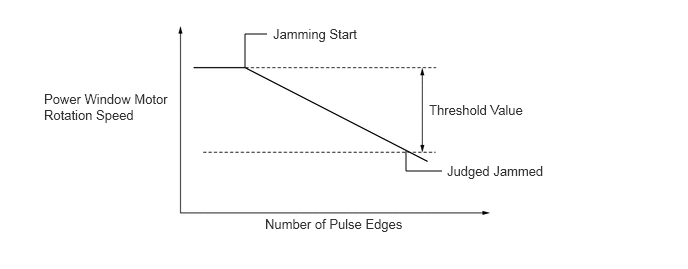
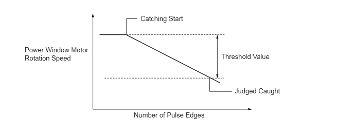
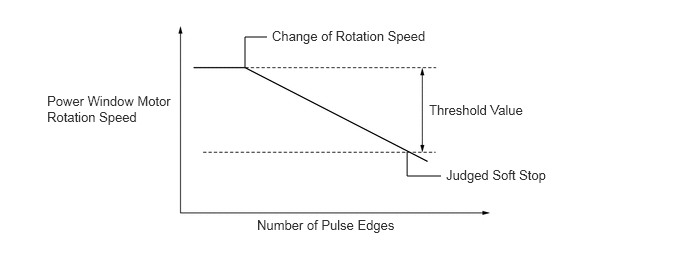

- Operation of the 3 passenger window at the power window regulator switch assembly is disabled when the window lock switch is pressed.*1
- Operation of the passenger window at the power window regulator switch assembly is disabled when the window lock switch is pressed.*2
- Even when the window lock switch is pressed, the 3 passenger window can be operated using the multiplex network master switch assembly.*1
- Even when the window lock switch is pressed, the passenger window can be operated using the multiplex network master switch assembly.*2
| Last Modified: 10-07-2025 | 6.11:8.1.0 | Doc ID: RM100000002MEFF |
| Model Year Start: 2024 | Model: Tacoma | Prod Date Range: [03/2024 - ] |
| Title: WINDOW / GLASS: POWER WINDOW CONTROL SYSTEM: POWER WINDOW CONTROL; 2024 - 2026 MY Tacoma Tacoma HV [03/2024 - ] | ||
POWER WINDOW CONTROL
SYSTEM CONTROL
(a) Power Window Control System (for Door Window Glass)
(1) The power window control system has the following functions:
|
Function |
Outline |
|---|---|
|
*1: Double cab models
*2: B-MAX models *3: Although this function is disabled by default, the function can be set via the customization function. |
|
|
Power Up-and-down |
This function causes the window to open or close while the multiplex network master switch assembly or each door power window regulator switch is being pulled halfway up or pushed halfway down. The window stops as soon as the switch is released. |
|
One-touch Auto Up-and-down |
The one-touch auto up-and-down function enables the window to be fully opened or closed at a touch of the multiplex network master switch assembly or each door power window regulator switch. |
|
Jam Protection |
The jam protection function automatically stops the power window and moves it downward if a foreign object gets jammed in the window during one-touch auto up operation or power up operation. |
|
Catch Protection |
The catch protection function automatically stops the power window if a foreign object gets jammed in the window during one-touch auto down operation or power down. |
|
Soft Stop |
During an up or down operation of the power window, the power window ECU stops the current to the power window motor just before the door glass is fully closed or opened. |
|
Remote Control |
The multiplex network master switch assembly can control the up-and-down operation of all door windows. |
|
Window Lock |
|
|
Key Off Operation |
This function makes it possible to operate the power windows for approximately 43 seconds after the ignition switch is turned off, if either door is not opened. |
|
Key-linked down*3 |
When the electrical key transmitter or card key is not in the interior detection area, the driver door is locked, and the mechanical key in the driver door is turned and maintained in the lock direction for approximately 1.5 seconds or more, the main body ECU activates the power window motors to raise all door windows while the mechanical key is turned. |
|
Transmitter-linked Down*3 |
When the certification ECU receives an unlock signal from the transmitter for longer than approximately 3 seconds, the main body ECU controls the power window motors in accordance with the signal to open all door windows. |
|
Power Window Glass Open Warning |
When the ignition switch is turned from on (IG) to off and the driver door is opened with the door glass open, the meter buzzer sounds once. Then, a warning message appears on the multi-information display. |
|
Customization |
The on or off setting of some functions can be performed using the Global TechStream (GTS). For details, refer to the Repair Manual. |
HINT:
The ECU built into each power window motor stores the initial position of its door window. The initial position is not cleared even if the terminals, fuses or the power window motor connector are disconnected. However, after removing or reinstalling window components, or replacing the power window regulator switch assembly or power window regulator motor assembly, the stored initial position data must be cleared and/or initialization must be performed. For details, refer to the Repair Manual.
(2) Jam Protection Function
- A jam protection function automatically stops the power window and moves it downward if a foreign object gets jammed in the door window during one-touch auto up operation and power up operation.
- The operation of the jam protection function is
described below:
Operation
Function
During each door auto up operation and remote control power up/auto up operation
Down operation of approximately 125 mm (4.92 in.) or more or 3 to 5 seconds
During each door power up operation
Down operation of approximately 25 mm (0.984 in.) or more or 3 to 5 seconds
- The power window ECU determines if a foreign
object gets jammed according to changes in the output
signal from the pulse sensor (Hall IC). Both of the
following 2 judgment methods are used:
Judgment Method (Overload Detection)
Judgment Method (Rotation Speed Comparison)

(3) Catch Protection Function
- The catch protection function automatically stops the power window if a foreign object gets caught in the window during a down operation.
- The power window ECU determines if a foreign
object gets caught according to changes in the output
signal from the pulse sensor (Hall IC). The judgment
method is as follows:
Judgment Method (Rotation Speed Comparison)

(4) Soft Stop Function
- During an up operation of the power window, the soft stop function stops the current to the power window motor just before the door glass is fully closed. This reduces the load on the door glass outer weatherstrip.
- Just before the door glass is fully closed, the
power window ECU determines if the door glass stop
position is detected according to changes in the
output signal from the pulse sensor (Hall IC). The
judgment method is as follows:
Judgment Method (Rotation Speed Comparison)
 - During a down operation of the power window, the power window ECU detects the rotation quantity of the power window motor according to output signals from the pulse sensor (Hall IC), and when the power window reaches the fully open stop position, the power window ECU stops the supply of power to the power window motor.
(b) Power Slide Back Glass Control System (Models with Power Slide Back Glass Control System)
(1) The back window glass power window control system has the following functions:
|
Function |
Outline |
|---|---|
|
Power Open-and-close |
This function causes the back window to open or close while the back window regulator switch (map light assembly) is pushed. The window stops as soon as the switch is released. |
|
Key Off Operation |
This function makes it possible to operate the back window glass power window for approximately 43 seconds after the engine switch is turned off, if either door is not opened. |
|
Back Window Glass Power Window Glass Open Warning |
When the engine switch is turned from on (IG) to off and the driver door is opened with the back window glass open, the meter buzzer sounds once. Then, a warning message appears on the multi-information display. |
FAIL-SAFE
(a) If a Hall IC in the power window motor malfunctions, some power window functions will be prohibited in fail-safe mode: (for Door Window Glass)
(1) Each power window only operates when the corresponding power window regulator switch is fully pushed down or pulled up and held in that position.
(2) When any power window ECU detects an abnormality in a Hall IC, which detects the position, speed and direction of the window, it switches to fail-safe mode:
DIAGNOSIS
(a) When the power window ECU detects a malfunction in the power window control system, a Diagnostic Trouble Code (DTC) is stored in memory. (for Door Window Glass)
(1) The DTCs can be read using the Global TechStream (GTS). For details, refer to the Repair Manual.